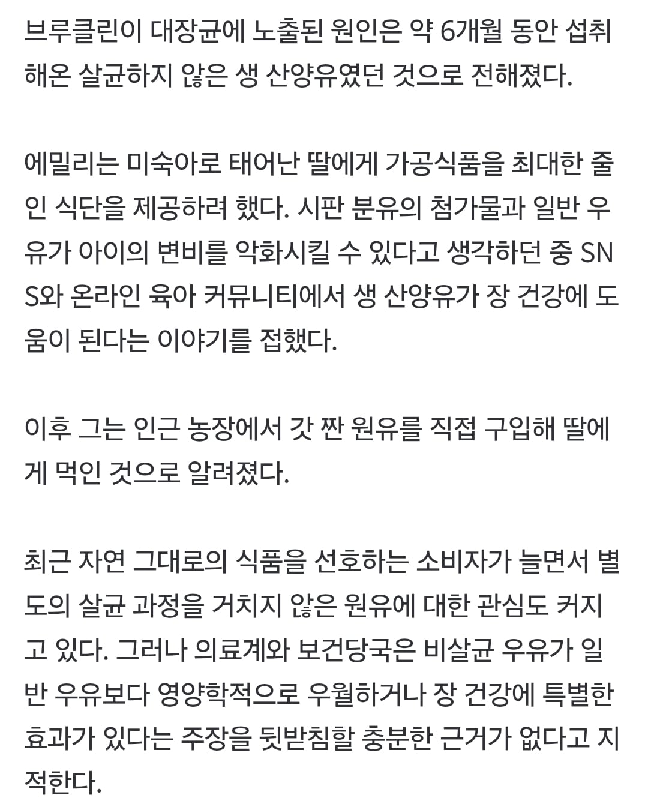

멸균 우유 맥여 병신들아...

멸균 우유 맥여 병신들아...
소들이.똥위에 그냥 눕고 앉음 걸을때마다도 똥이 젖에 존나게 튐. 물론 젖짤때 소독하기는하는데 멸균은 아니지 그걸 걍 먹인거임..
갓짠 우유도 끓여먹는게 기본 상식인데 레전드네
어디 뭐 고전 소설이나 신화보면 애기들한테 양의 젖을 먹였다 이런거보고 따라한듯
파스퇴르 : 이 씨발 병신 새끼들아 내가 다 해줬잖아!
파스퇴르 엄청난 사람이네 ㄷㄷ
링컨 엄마가 독초먹은 소의 우유먹다 즉었다했었나
안아키 ㅋㅋㅋ
그 결핵이 왜 사라졌을까?
이 시발저능아애미년아
의사말은 쳐 안듣고
인터넷에 있는 개병신소리는 맹신하는 병신들...... 저런 병신들도 애를 낳는데....
왜 굳이 원시시대로 가고자 하는거지?
고대 영아 생존률은 고려하지 않은 생존자 편향의 오류를 제대로 답습하네
생우유라고 하지 말아라. 비살균우유라고 해.
우리나라에선 생우유라고 하면 그냥 1리터짜리 우우 이런걸 지칭하고 멸균우유는 200ml짜리 멸균팩에 담긴 그런거 얘기하는건데 부모들이 오해하고 일반우유에 안좋은 생각 가질라
저능아들이 점점 늘어나는중
이딴 저능함으로 애좀 낳지마라
현대의학 이전 영아사망은 생각해보지도 않은거냐
아기는 툭 하면 죽는 존재란 말이다
알 카포네님 오늘도 당신의 은혜에 목이 메여
모두가 매일 찾는 상품을 취급해야 해. 술은 아니야. 알코올 중독자가 아닌 이상, 대다수의 사람들은 파티할 때나 진이나 스카치를 한두 병 정도 사는 게 전부야. 노동자들은 토요일 밤에 맥주를 여섯 병 정도를 사는데, 그거면 그 주 몫은 땡이지. 하지만 우유는 말이지! 모든 가족들은 매일 우유를 식탁에 올리려 하지. 레이크 쇼어 드라이브 사람들은 커피를 마실 때 진한 크림을 넣기를 원하지. 백 오브 더 야즈의 대가족은 매일같이 아이들 몫으로 신선한 우유를 1-2 갤런씩 사야하고... 자네들은 신선한 우유의 마진이 밀주보다 크다는 사실을 알았나? 정말이지, 우리는 엉뚱한 사업에 종사했었어.
가공식품이 왜 나쁘다고 생각하지?
진짜 좋은 자연우유 먹이고 싶으면 모유를 멕이면 되긴 함